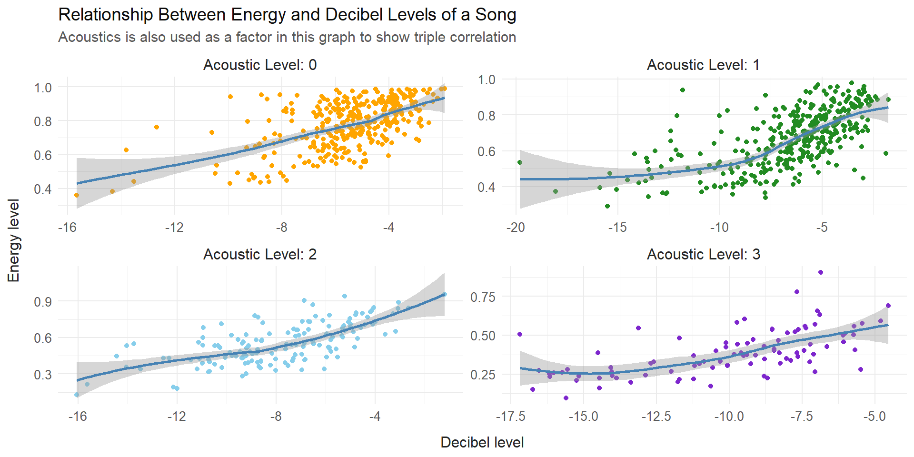

Are Louder Songs More Energetic?
Tonatiuh De Leon
knitr::opts_chunk$set(message = FALSE, warning = FALSE)
library(rvest)
library(tidyverse)
library(car)
library(knitr)
## Reading tables from website
Sys.setenv(SPOTIFY_CLIENT_ID = '857bab10601a4bc2af19d359336d3af7')
Sys.setenv(SPOTIFY_CLIENT_SECRET = 'f36a14960bc445fba551b36f3b65cd65')
url <- "https://kworb.net/spotify/songs.html"
webpage <- read_html(url)
table <- html_table(webpage)[[1]]
url1 <- "https://kworb.net/spotify/artists.html"
webpage1 <- read_html(url1)
table1 <- html_table(webpage1)[[1]]
url2 <- "https://kworb.net/spotify/listeners.html"
webpage2 <- read_html(url2)
table2 <- html_table(webpage2)[[1]]
## Turniong tables into data frames and joining them
df <- as.data.frame(table) |>
rename(title = `Artist and Title`) |>
separate(title, into = c("artist", "title"), sep = " - ") |>
rename(streams = Streams,
daily = Daily) |>
mutate(streams = as.numeric(gsub(",", "", streams)),
daily = as.numeric(gsub(",", "", daily))) |>
drop_na()
df1 <- as.data.frame(table1) |>
rename(artist_streams = Streams,
artist = Artist,
daily1 = Daily) |>
mutate(artist_streams = as.numeric(gsub(",", "", artist_streams))) |>
dplyr::select(artist, artist_streams, daily1) |>
drop_na()
df2 <- as.data.frame(table2) |>
rename(monthly_listeners = Listeners,
peak_monthly_listeners = PkListeners,
months_sincepk = Peak,
daily_average = `Daily Trend`,
artist = Artist) |>
mutate(monthly_listeners = as.numeric(gsub(",", "", monthly_listeners)),
peak_monthly_listeners = as.numeric(gsub(",", "", peak_monthly_listeners)),
daily_average = as.numeric(gsub(",", "", daily_average)))|>
dplyr::select(artist, monthly_listeners, peak_monthly_listeners, months_sincepk, daily_average) |>
drop_na()
## Data from spotify in kaggle saved in my gith
dta <- read_csv("https://github.com/Tonadeleon/Regression-Projects/raw/main/Datasets/dataset.csv")|>
#filter(popularity > 20) |>
rename(title = track_name,
artist = artists,
title_id = track_id,
album = album_name,
loud = loudness,
words = speechiness,
acoustics = acousticness,
instrumental = instrumentalness,
live = liveness) |>
inner_join(df1, by="artist", relationship =
"many-to-many") |>
inner_join(df2, by="artist", relationship =
"many-to-many")
## Wrangling the final dataframe
dt <- inner_join(dta, df, by = c("title", "artist"), relationship = "many-to-many")
## simple model
dt1 <- dt |>
mutate(acoustics = round(acoustics*10),
acoustics = case_when(acoustics %in% c(1,2,3) ~ "Acoustic Level: 1", acoustics %in% c(4,5,6) ~ "Acoustic Level: 2", acoustics %in% c(7,8,9,10) ~ "Acoustic Level: 3", TRUE ~ "Acoustic Level: 0")) |>
group_by(loud) |>
summarize(mean_energy = mean(energy),
acoustics = first(acoustics))
mylm <- lm(mean_energy ~ loud + as.factor(acoustics), dt1)Introduction
enerloud <- ggplot(subset(dt, loud > -20), aes((loud), energy, col = energy)) +
geom_point() +
geom_smooth(col = "steelblue") +
viridis::scale_color_viridis(option = "B") +
labs(
title = "Relationship Between Energy and Decibel Levels of a Song",
subtitle = "Energy is a Spotify expert rating where 1 is louder and 0 quieter",
x = "Decibel level",
y = "Energy level",
col = "Energy"
) +
theme_minimal() +
theme(
plot.title = element_text(size = 14, color = "grey5"),
axis.text.x = element_text(color = "grey25", size = 10),
axis.text.y = element_text(color = "grey25", size = 10),
plot.subtitle = element_text(color = "grey35", size = 11.5),
axis.title.x = element_text(color = "grey15", size = 12, margin = margin(10, 0, 0, 0)),
axis.title.y = element_text(color = "grey15", size = 12, margin = margin(0, 10, 0, 0))
)
acousloud <- ggplot(dt, aes((acoustics), loud, col = loud)) +
geom_point() +
geom_smooth(col = "steelblue") +
viridis::scale_color_viridis(option = "G") +
labs(
title = "Relationship between acoustics and loudness levels of a song",
subtitle = "Acoustics is a Spotify expert rating where 1 has more acoustic sounds and 0 hasn't",
x = "Acoustics level",
y = "Decibel level",
col = "Decibel"
) +
theme_minimal() +
theme(
plot.title = element_text(size = 14, color = "grey5"),
axis.text.x = element_text(color = "grey25", size = 10),
axis.text.y = element_text(color = "grey25", size = 10),
plot.subtitle = element_text(color = "grey35", size = 11.5),
axis.title.x = element_text(color = "grey15", size = 12, margin = margin(10, 0, 0, 0)),
axis.title.y = element_text(color = "grey15", size = 12, margin = margin(0, 10, 0, 0))
)
acouener <- ggplot(dt, aes((acoustics), (energy), col = energy)) +
geom_point() +
geom_smooth(col = "steelblue") +
viridis::scale_color_viridis(option = "D") +
labs(
title = "Relationship between acoustics and loudness levels of a song",
subtitle = "Energy is a Spotify expert rating where 1 is louder and 0 quieter",
x = "Acoustics level",
y = "Energy level",
col = "Energy"
) +
theme_minimal() +
theme(
plot.title = element_text(size = 14, color = "grey5"),
axis.text.x = element_text(color = "grey25", size = 10),
axis.text.y = element_text(color = "grey25", size = 10),
plot.subtitle = element_text(color = "grey35", size = 11.5),
axis.title.x = element_text(color = "grey15", size = 12, margin = margin(10, 0, 0, 0)),
axis.title.y = element_text(color = "grey15", size = 12, margin = margin(0, 10, 0, 0))
)
all <- ggplot(subset(dt1, loud > -20), aes(loud, (mean_energy), col = as.factor(acoustics))) +
geom_point(show.legend = T) +
geom_smooth(col = "steelblue") +
scale_color_manual(values = c("orange","forestgreen", "skyblue", "purple3")) + # Set specific colors
labs(
title = "Relationship Between Energy and Decibel Levels of a Song",
subtitle = "Acoustics is also used as a factor in this graph to show triple correlation",
x = "Decibel level",
y = "Energy level",
col = "Acoustics"
) +
theme_minimal()
all +
facet_wrap(~as.factor(acoustics), scales = "free") +
theme(
plot.title = element_text(size = 14, color = "grey5"),
axis.text.x = element_text(color = "grey35", size = 10),
axis.text.y = element_text(color = "grey35", size = 10),
plot.subtitle = element_text(color = "grey35", size = 11.5),
axis.title.x = element_text(color = "grey15", size = 12, margin = margin(10, 0, 0, 0)),
axis.title.y = element_text(color = "grey15", size = 12, margin = margin(0, 10, 0, 0)),
legend.text = element_text(color = "grey20", size=11),
strip.text = element_text(size = 12, color = "grey15"),
legend.position = "none")
The purpose of this analysis is to explain the energy level a song may communicate to the individual by the loudness of it.
For this, Spotify data was gathered from different places such as Kaggle, and also Kworb’s Project.
The variables within this dataset had many other correlated variables. Those I included in a different analysis where I use followers per artist to explain and predict their daily streams, and estimate their possible earnings.
In this analysis I discovered that there is a high correlation between these three variables.
Response:
- Energy - Energy level that the song transmits to the listener (0 to 1, 1 being high energy)
Explanatory:
Loudness - Average decibel level of the song
Acousticness - Categorical variable (0 to 4) on whether the song has acoustic instruments in it. 4 being too many instruments and 0 being none
\[ \left.\begin{array}{ll} H_0: \beta_1 = 0 \\ H_a: \beta_1 \neq 0 \end{array} \right\} \ \text{Slope Hypotheses} \\\ \\ \text{Alpha Level .05} \]
To not leave statisticians with questions, this model will be tested at the .05 alpha level on its slope. This will help us confirm if there is an actual correlation between the variables.
A t-test is performed for this matter:
b <- coef(mylm)
tvalue <- ((b[2]) - 0)/(0.001939)
result <- data.frame(a = round(pt(-abs(tvalue), 545 ) * 2, 5), row.names = NULL)
kable(result, align = "c", col.names = 'P. Value when 0 energy level increase per each additional decibel in a song is the null')| P. Value when 0 energy level increase per each additional decibel in a song is the null |
|---|
| 0 |
It is appropriate to suggest that there is sufficient evidence to conclude that the energy levels in a song are influenced by both its loudness levels and the presence of acoustic instruments.
Model Selection
Energy ~ Loudness

In these tabs I’ll explain what was the thought process to conclude
that these three variables Energy, Loudness,
and Acoustics were correlated between each other.
Consider the graph above that shows an already high correlation between the energy level that users felt when listening to each song, and the decibel level of that same song. The coloring of the graph shows that as the decibel levels went higher (the song was louder), the listener felt more energized by the same song.
Loudness ~ Acousticness

We can dive deeper into what other correlated variables there may be
by using each of the previous variables, and comparing them with other
variables such as Acousticness.
As seen above, there is also a significant correlation between acousticness and how loud a song is. We can say that it is possible to explain the effect that acousticness has in the loudness levels fo a song. We can see that when a song has a higher presence of acoustic instruments it tends to be a quieter song and viceversa.
Energy ~ Acousticness

A similar phenomenon happens when we compare acousticness presence in a song and its energy level. It’s safe to assume that when a song has more acoustic instruments, then people tend to feel more relaxed, or at least not energized.
So how can we add this variable as a predictor for energy in a simple way?
Three variables
all + theme(
plot.title = element_text(size = 14, color = "grey5"),
axis.text.x = element_text(color = "grey35", size = 10),
axis.text.y = element_text(color = "grey35", size = 10),
plot.subtitle = element_text(color = "grey35", size = 11.5),
axis.title.x = element_text(color = "grey15", size = 12, margin = margin(10, 0, 0, 0)),
axis.title.y = element_text(color = "grey15", size = 12, margin = margin(0, 10, 0, 0)),
legend.text = element_text(color = "grey20", size = 11),
strip.text = element_text(size = 12, color = "grey15"),
legend.position = "bottom")+
guides(
color = guide_legend(override.aes = list(size = 4.5)) # Adjust the size value as needed
)
Interestingely enough, we can see that within the same plot of
energy ~ loudness there is presence of group
segregation.
Originaly acoustic levels were from 0 - 1. To be able to add this variable in a simple way, I rounded those numbers to the nearest tenth (bottom round), and then grouped them by their amount of observations in each group. Thus, 4 factors were formed for this specific analysis by grouping songs were they had similar decibel levels together as follows:
After Rounding their original decibel level to the nearest tenth:
Acoustic Level: 0 - Songs with no acoustics at all
Acoustic Level: 1 - Songs that originally were at acoustic levels of 10, 20, and 30 (rounded)
Acoustic Level: 2 - Songs that originally were at acoustic levels of 40, 50, and 60 (rounded)
Acoustic Level: 3 - Songs that originally were at acoustic levels of 70, 80, 90, and 100 (rounded)
Before adding acousticness to the model, only 50% of the variance was being explained. But with these new factors in the model an increase of 15% was found.
If we were to analyze these new four groups, then we now go back to the first tab were you can take a look at them one by one.
Summary
| Estimate | Std. Error | t value | Pr(>|t|) | |
|---|---|---|---|---|
| (Intercept) | 0.9719 | 0.009973 | 97.45 | 0 |
| loud | 0.03503 | 0.001427 | 24.55 | 3.825e-104 |
| as.factor(acoustics)Acoustic Level: 1 | -0.07221 | 0.00882 | -8.187 | 8.308e-16 |
| as.factor(acoustics)Acoustic Level: 2 | -0.146 | 0.01184 | -12.33 | 1.47e-32 |
| as.factor(acoustics)Acoustic Level: 3 | -0.232 | 0.01517 | -15.3 | 1.576e-47 |
| Observations | Residual Std. Error | \(R^2\) | Adjusted \(R^2\) |
|---|---|---|---|
| 985 | 0.1178 | 0.6253 | 0.6238 |
The correlation between these three variables has the capacity of explaining almost 63% of the variance between loudness and energy. I’m pretty sure that this model could be taken a little further with an analysis that focuses more on the regression aspect of it.
Validation
set.seed(1)
num_rows <- 550 #882 total
keep <- sample(1:nrow(dt1), num_rows)
mytrain <- dt1[keep, ]
mylm <- lm(mean_energy ~ loud + as.factor(acoustics), mytrain)
mytest <- dt1[-keep, ] #Use this in the predict(..., newdata=mytest)
yhcc <- predict(mylm, newdata=mytest)
ybarcc <- mean(mytest$mean_energy)
SSTOcc <- sum( (mytest$mean_energy - ybarcc)^2 )
SSEcc <- sum( (mytest$mean_energy - yhcc)^2 )
rscc <- 1 - SSEcc/SSTOcc
n <- length(mytest$mean_energy) #sample size
pcc <- length(coef(mylm)) #num. parameters in model
rscca <- 1 - (n-1)/(n-pcc)*SSEcc/SSTOcc
my_output_table2 <- data.frame(
Model = c(
"Alternative Model"),
`Original R2` = c(
summary(mylm)$r.squared),
#summary(bsalm)$r.squared),
`Orig. Adj. R-squared` = c(
summary(mylm)$adj.r.squared),
#summary(bsalm)$adj.r.squared,
`Validation R-squared` = c(
rscc),
`Validation Adj. R^2` = c(
rscca))
colnames(my_output_table2) <- c(
"Model", "Original $R^2$",
"Original Adj. $R^2$",
"Validation $R^2$",
"Validation Adj. $R^2$")
knitr::kable(my_output_table2, escape=TRUE, digits=5)| Model | Original \(R^2\) | Original Adj. \(R^2\) | Validation \(R^2\) | Validation Adj. \(R^2\) |
|---|---|---|---|---|
| Alternative Model | 0.62542 | 0.62267 | 0.62428 | 0.62079 |
After Validations were run on a different sample size, and order, we can see a stable performance in the R2 coefficient in this model. This means that it is a trustable regression model, it only is able to account for around 65% on the variance within the observations, it could probably suport more variables and be even higher.